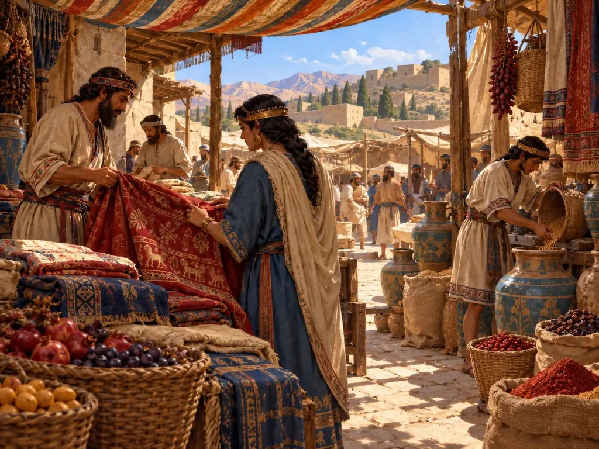
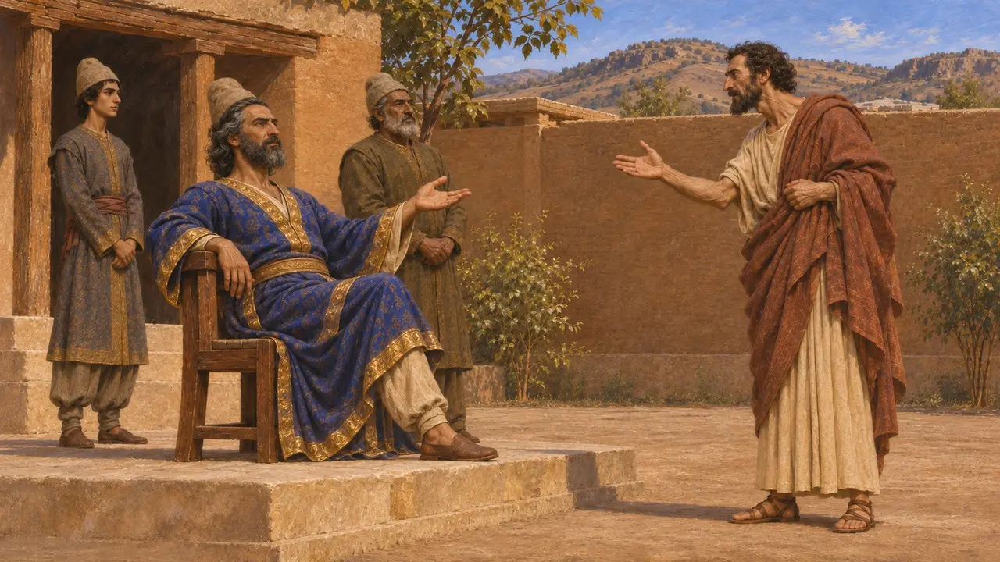
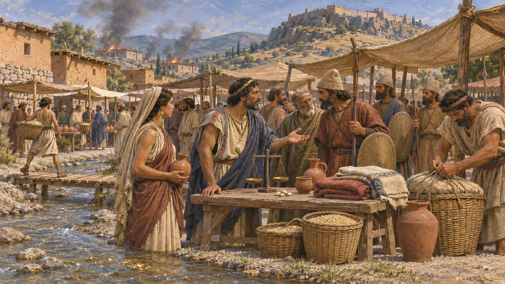
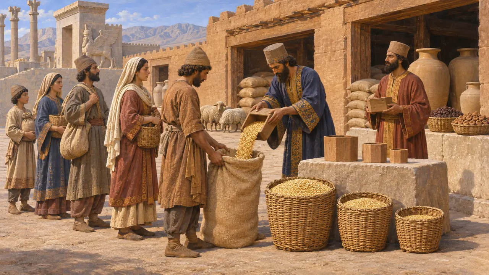
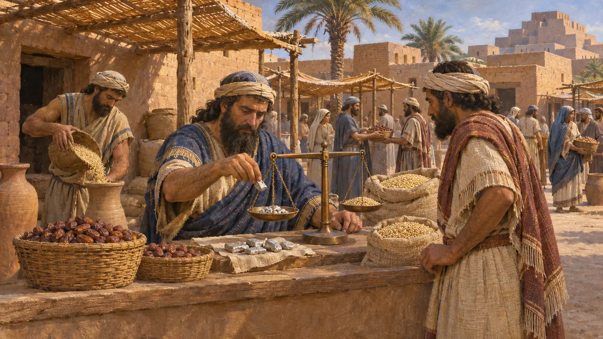
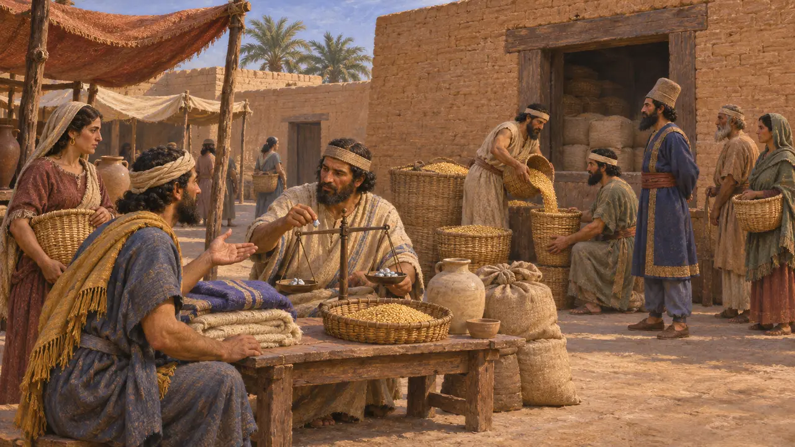
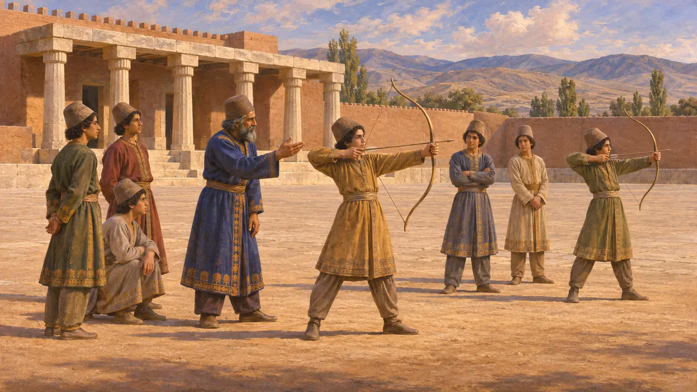

بازار
بازارها و داد و ستد کالا در شاهنشاهی هخامنشی، سدهٔ 6 تا 5 پ.م.
واژهٔ بازار از فارسی bāzār و فارسی میانه wāzār میآید، اما تالارهای سرپوشیدهٔ بازار که این واژه امروز به ذهن میآورد از آنِ سدههایی بسیار دیرتر است. در روزگار نخستین شاهان هخامنشی، کالاها از دو راه جابهجا میشدند: از راه بازارهای پرجنبوجوش در شهرهای کهن بازرگانی چون بابل و سارد، و از راه جیرههایی که از انبارهای شاهی در سرزمین مادری پارس توزیع میشد. چگونگی پیوند این دو نشان میدهد امپراتوری چگونه مردمانش را سیر میکرد.
در بازی: خریداران کالا را از انبار میآورند و بازرگانی آن را خانه به خانه میبرد و به حدود 15 خانه خدمت میرساند. این سادهسازی است: چنین دورهگردیهایی شناختهشده نیست و در پارس بسیاری از کارگران جیرهٔ خود را از انبارهای شاهی میگرفتند.

کوروش و بازار یونانی
روایت باستانیهرودوت میگوید هنگامی که جارچیای اسپارتی به کوروش هشدار داد که به شهرهای یونانی آسیب نرساند، کوروش مردمانی را به ریشخند گرفت که در میانهٔ شهرشان جایی دارند تا در آن گرد آیند و با سوگند یکدیگر را بفریبند. هرودوت توضیح میدهد که پارسیان داد و ستد در بازار را به کار نمیبستند و میدان بازاری از آنِ خود نداشتند. این داستان نگاهی یونانی به آیین پارسیان است که در برابر آگورای یونانی نهاده شده است.
Herodotus 1.153

بازرگانان لیدیایی و آگورای سارد
روایت باستانیهرودوت میگوید لیدیاییان نخستین مردمی که میشناسیم بودند که سکهٔ زر و نقره ضرب کردند و نخستین خردهفروشان نیز بودند، هرچند کهنترین سکههای لیدیایی در واقع از الکتروم بودند. او بازار سارد را وصف میکند که رود زرآور پاکتولوس از میانش میگذشت. هنگامی که ایونیان، آتنیان و ارتریاییان در سال 498 پ.م. شهر را به آتش کشیدند، لیدیاییان و پارسیانِ گرفتار در آنجا گرد آمدند تا از خود دفاع کنند. در دوران فرمانروایی پارسیان، سارد مقر ساتراپ لیدیه بود.
Herodotus 1.94; Herodotus 5.101

جیره از انبارهای شاهی
در اسنادگلنوشتههای باروی تخت جمشید، که در روزگار داریوش به عیلامی نوشته شدهاند، جو، شراب، آبجو، آرد، میوه و دامی را ثبت کردهاند که از انبارهای شاهی به کارگران، مسافران و کارگزاران داده میشد. کارگران بهجای خریدن خوراک از بازار، جیرهٔ ماهانهای میگرفتند که بر پایهٔ رتبه، جنس و سن درجهبندی شده بود. گلنوشتههای خزانه، که دیرتر نوشته شدهاند، نشان میدهند که بخشی از مزد برخی کارگران به نقره پرداخت میشد و در برابر مقادیر معینی گوسفند یا شراب سنجیده میشد.
R. T. Hallock, Persepolis Fortification Tablets, 1969; G. G. Cameron, Persepolis Treasury Tablets, 1948

خرید و فروش در سرزمین بابل
در اسنادبایگانیهای تجاری بابل داستان دیگری روایت میکنند. خاندان اگیبی در بابل خرما، جو و خانه خرید و فروش میکردند، نقره وام میدادند و املاک را اجاره میدادند. بنگاه متأخرتر موراشو در نیپور زمینها را اداره میکرد و در برابر اجارهای از محصول و نقره واگذار میکرد. نقرهٔ وزنشده نقش پول را داشت و قیمتها با عرضه بالا و پایین میرفت؛ پس بازار بخشی از زندگی روزمره در این ایالت بود.
M. Jursa, Aspects of the Economic History of Babylonia in the First Millennium BC, 2010

بازارها تا کجا دامن میگستردند
مورد مناقشهتاریخنگاران هنوز بحث میکنند که چه بخشی از اقتصاد شاهنشاهی از راه بازارها میگذشت و چه بخشی از راه بازتوزیع شاهی و معبدی. برخی بر نظام جیرهبندی تخت جمشید و نظارت شاه بر انبارها تأکید میکنند. برخی دیگر به شواهد بابلی از بازارهایی که بها را تعیین میکردند و کاربرد روزافزون نقره اشاره دارند. بیشتر پژوهشگران امروز میپذیرند که هر دو نظام در کنار هم کار میکردند، با سهمهایی که از سرزمینی به سرزمین دیگر فرق داشت.
P. Briant, From Cyrus to Alexander, 2002; M. Jursa, Aspects of the Economic History of Babylonia in the First Millennium BC, 2010

میدان آزادِ گزنفون
افسانهٔ متأخرگزنفون، که حدود یک سده و نیم پس از کوروش مینوشت، تصویری آرمانی از پارس به دست میدهد که در آن میدانی آزاد در نزدیکی کاخ از کالا و بازرگانان خالی نگه داشته میشد تا هیاهویشان آموزش جوانان را بر هم نزند. کوروشنامه داستانی اخلاقی و سیاسی است و این تصویر از زندگی پارسی برای آموزش فضیلت پرداخته شده است، نه برای ثبت رسمهای واقعی.
Xenophon, Cyropaedia 1.2.3
منابع
- Herodotus 1.153
- R. T. Hallock, Persepolis Fortification Tablets, 1969
- M. Jursa, Aspects of the Economic History of Babylonia in the First Millennium BC, 2010
- P. Briant, From Cyrus to Alexander, 2002
- G. G. Cameron, Persepolis Treasury Tablets, 1948
- Xenophon, Cyropaedia 1.2.3